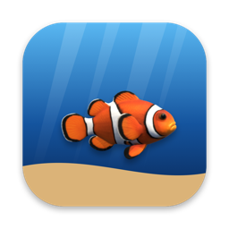

Aquarium wallpaper for Mac
A living reef behind your windows
If you used to love aquarium screensavers, or you put on a 4K fish-tank video to relax while you work, Fish Ocean brings that calm to your Mac desktop. It lives behind your windows as a wallpaper, so it never covers what you're doing.
Not a looped video
Most aquarium wallpapers play a video clip over and over. In Fish Ocean the clownfish decides where to swim, turns, drifts and explores, so it isn't a looped video. The corals are based on Smithsonian Open Access 3D scans.
Its day follows yours
The light follows the real sunrise and sunset for your time zone: rosy dawns, bright turquoise days, orange sunsets and blue nights where the water glows.
Free to try
The free version is your fish's home reef. With Full Ocean, a one-time purchase with no subscription, your fish travels through nine habitats (kelp forests, anemone fields and more), eats plankton, rests in its anemone, grows over about two months and meets schools of blue tangs.
Light on your Mac
It lowers its frame rate on battery and pauses when windows cover the desktop. It spans all your displays as one ocean, and every few minutes the fish swims over to the other screen. No ads, no subscription. macOS 13 or later, Apple silicon and Intel.